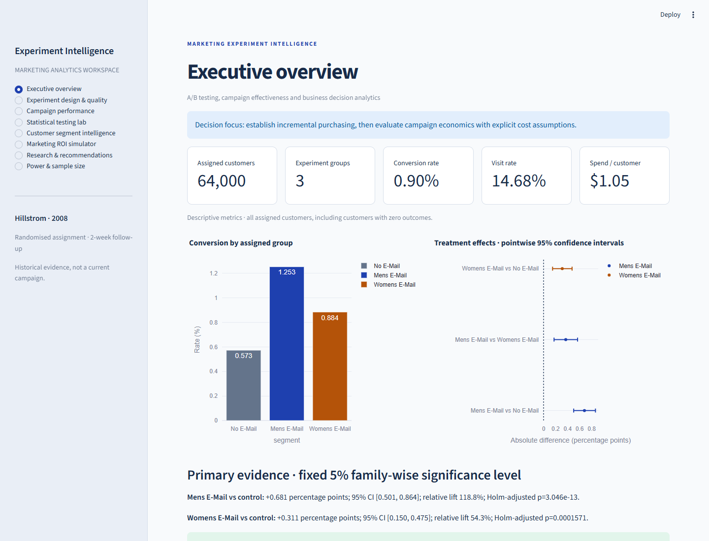

Purchase conversion
ALL ASSIGNED CUSTOMERSRates include all assigned customers. Each group has approximately 21,300 customers.
A randomised holdout reveals what promotional email actually changed. Explore the evidence behind two campaigns, 64,000 customers and one business decision.
Same customers, three ways to measure impact.
Choose an outcome to update the evidence.
Rates include all assigned customers. Each group has approximately 21,300 customers.
Absolute rate changes are in percentage points; relative lift is a percentage of the control rate. All displayed intervals are pointwise 95% intervals, not simultaneous intervals.
Both email assignments increased purchasing in this experiment. The men’s campaign is the stronger candidate for a contemporary replication. Profitability still depends on costs and margins.
A Python and Streamlit application connects
experiment integrity, inference and economics.

Original Hillstrom customer assignments are preserved. Validation covers all 12 fields, missingness, category coding and outcome consistency. Duplicate-looking records are retained.
Two primary conversion tests use Holm correction. Newcombe intervals describe risk differences; Welch tests and a seeded bootstrap assess mean spending, including zeros.
Twelve DuckDB analyses are reconciled against Python. The application and reports share tested calculations. All 36 automated checks passed in the recorded local verification.
This is a 2008 experiment with two-week outcomes, not a current campaign. Assignment is observed; delivery, opens, clicks and actual campaign costs are unavailable. None of the 14 exploratory interaction tests survives Holm correction. The study does not establish individual treatment effects or present-day profitability.
Original-data redistribution permission is unresolved. This page publishes aggregate results and dashboard captures, with no customer-level records. Source acquisition used the publisher’s original HTTP endpoint after its HTTPS certificate failed; the recorded checksum supports byte reproducibility.
Read the reasoning, inspect the estimates or reproduce the analysis.